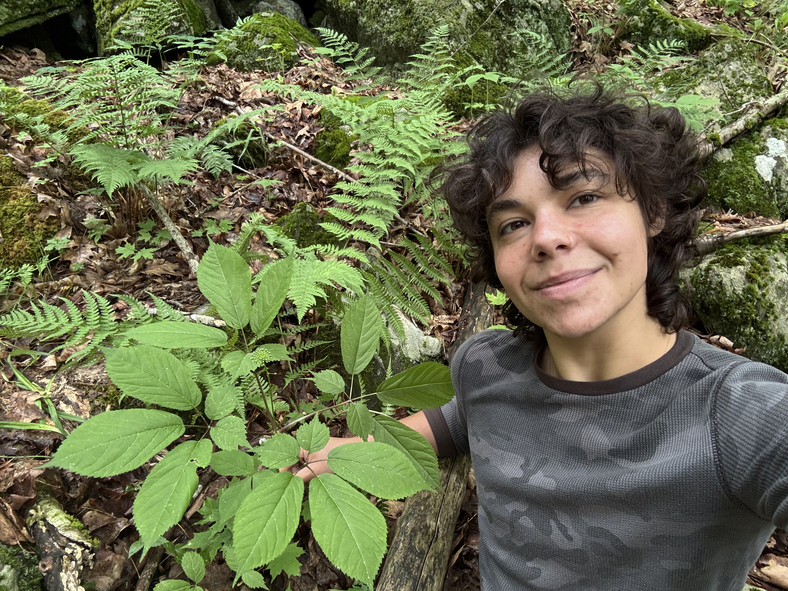

The Forest School, Yale School of the Environment · Northeast Forest Farmers Coalition
Nat Burr
Human-mediated dispersal of understory forest herbs through population genomics for applications in agroforestry systems
Master of Forestry Candidate · Yale School of the Environment · The Forest School
I study how human activity shapes the movement and genetic structure of understory plant populations. My research combines population genomics with landscape ecology to understand dispersal dynamics and their applications in agroforestry system design and conservation. A background in environmental justice law & policy and regional food systems grounds my work in the relationships between people, plants, and place.

SNP analysis and population structure pipeline for wild American ginseng across New England.
Landscape analysis tools for evaluating forest farming site suitability in the Northeast.
Population genomics pipeline for inferring human-mediated dispersal in understory plant species.